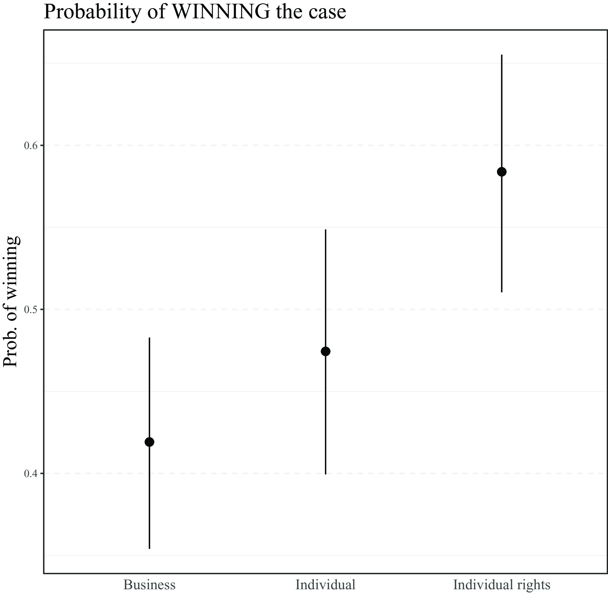

Legal Mobilization and Judicial Impact
Week 9
Legal mobilization
What kinds of individuals and groups resort to litigation?
What influences the likelihood of interest group litigation and what makes their success likely?
Legal mobilization
“invoking legal norms as a form of political activity by which the citizenry uses public authority on its own behalf” (Zemans 1983)
the enforcement of the law often depends on private (non-governmental) actors
- traditionally in the US (“adversarial legalism”), possibly also in the EU (Kelemen 2012)
Adversarial vs bureaucratic legalism
law and policy in the US are strongly shaped by means of “lawyer-dominated litigation” (Kagan 2003)
economic liberalization and political fragmentation in the EU has been argued to be leading Europe down the American path (Kelemen 2012)
some private enforcement but role of state bureaucracies in implementation (centralized, hierarchical) remains strong in Europe – resistance to the US model (Foster 2024)
Legal mobilization
competing definitions but central is the use of law (Lehoucq and Taylor 2020)
“the use of law in an explicit, self-conscious way through the invocation of a formal institutional mechanism”
comprises not only litigation but also e.g. amicus curiae briefs and legal petitions
related to but distinct from legal framing and legal consciousness
Legal mobilization
“the process by which individuals make claims about their legal rights and pursue lawsuits to defend or develop those rights” (Epp 1998, 18)
- “claims” not strictly invoking formal institutional mechanisms
Why mobilize the law?
most often targeting legal change through courts (“strategic litigation”)
raise rights consciousness and improve receptivity to claims
generate media attention and public support
Why not?
fear of creating negative precedents entrenching unfavourable outcomes
change through courts lacks in democratic legitimation
fear of backlash against the pursued cause
- but other forms of policy change can also generate backlash (Keck 2009)
The drivers of legal mobilization
LM requires capacity to navigate a complex organizational field
actors need to have the necessary resources (financial, expertise) to take advantage of the available legal opportunity structure (LOS)
- but LOS is not just exogenously given, acting on it shapes it going forward (Vanhala 2012)
Legal opportunity structure (static)
legal stock
- what rights and laws are available to “hang” your case on?
access to justice
- who can access the procedure and under what conditions?
legal costs
- how expensive is it to access the procedure and is legal aid available?
Legal opportunity structure (dynamic)
the text of a law is just the starting the point of law construction
- rules need to be interpreted in the process of being applied
actors attempt to mould LOS to their advantage by advancing new interpretations
most commonly they are targeting judges but there are other options (e.g. MPs, ombudsmen)
some might not see an opportunity where there is one (Pas 2024)
Empirical examples
civil rights movements
Brown v Board of Education of Topeka (1954)
open LOS in US v closed LOS in NI (De Fazio 2012)
Empirical examples
environmental movements (Vanhala 2022)
Aarhus Convention
climate litigation (Setzer and Vanhala 2019; Voeten 2024)
Empirical examples
LGBTQ+ movements (Keck 2009)
decriminalization, recognition, same-sex marriage
international courts can help (Helfer and Voeten 2014)
legalization of same-sex marriage reduces anti-gay bias (Kreitzer, Hamilton, and Tolbert 2014; Ofosu et al. 2019)
Role of international law
chances are the LOS is in a stable equilibrium due to well-defined and entrenched preferences of the executive, legislature and courts
there is a huge literature on international law and courts disrupting such domestic equilibria and creating new opportunities for actors (Helfer and Voeten 2014; Simmons 2009; Alter and Vargas 2000; Pavone 2019)
- domestic political players have less control over the international LOS
Who litigates?
until the 1930s, 90% of the SCOTUS docket was formed by business and property cases (Epp 1998)
in the 1960s individual rights litigation at SCOTUS reached 70%
- most cases were sponsored by NGOs such as ACLU and NAACP
contrast with lack of success of Indian Supreme Court in the 1990s despite efforts to invite more rights cases
disagreement about the importance of the “support structure” (Sanchez Urribarri et al. 2011; Epp 2011)
Who litigates?
the equalizing potential of the law is limited in practice by resource inequality (Galanter 1974)
financial resources buy (repeated) access to courts and better legal expertise (lawyers)
repetition increases experience and therefore winning chances
more resourceful actors litigate more (Hofmann and Naurin 2021)
- but mixed evidence regarding proximity to power (Coglianese 1996)
Legal mobilization in Costa Rica
in 1989, the Costa Rican constitution was reformed to create a constitutional chamber in the Supreme Court
Wilson and Rodríguez Cordero (2006) argue that marginalized groups managed to score significant wins without organization and resources due to very permissive access
the existence of an expansive list of rights as a prerequisite
Who wins?
those who litigate more are usually also more likely to win
individuals are the least likely to win cases in the US, followed by interest groups (heterogeneous) and governments
government lawyers often tend to be more successful than private lawyers
- e.g. the US Solicitor General’s certoriari petitions to SCOTUS have a success rate of 70% compared to 3% for others (Chandler 2011; Black and Owens 2011; Bailey, Kamoie, and Maltzman 2005)
Questioning “repeat players”
Galanter (1974) argues that repeat players make for more successful litigants (they are more strategic)
but some repeat players are just chronically bad businesses who also lose cases (Volkov, Skougarevskiy, and Kuchakov 2023)
decouple party capability from repetitiveness
Who wins?
broad evidence base showing that party capability predicts success before courts (McCormick 1993)
attorney experience before SCOTUS (Nelson and Epstein 2022) and US immigration courts (Miller, Keith, and Holmes 2015) helps litigants win
the “haves” hire better lawyers than the “have nots” which is why they win more often (Szmer, Songer, and Bowie 2016)
Who wins in international courts?
Hermansen, Pavone, and Boulaziz (2025) ask whether international courts amplify the power of the already powerful
they find that instead the ECJ favours less privileged litigants and (“leveling”) and “spotlights” those rulings which enhance individual rights
suggests ICs are consciously trying to build up their popular legitimacy
Who wins in international courts?
Source: Hermansen, Pavone, and Boulaziz (2025)
References

POLS0113: Judicial Politics